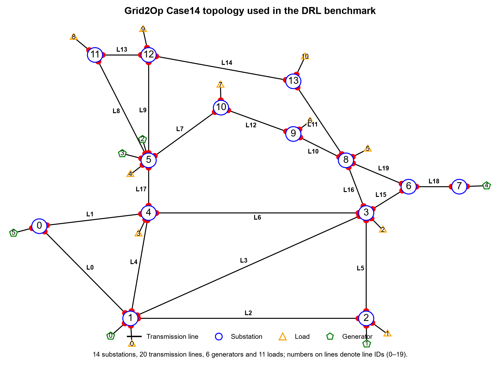
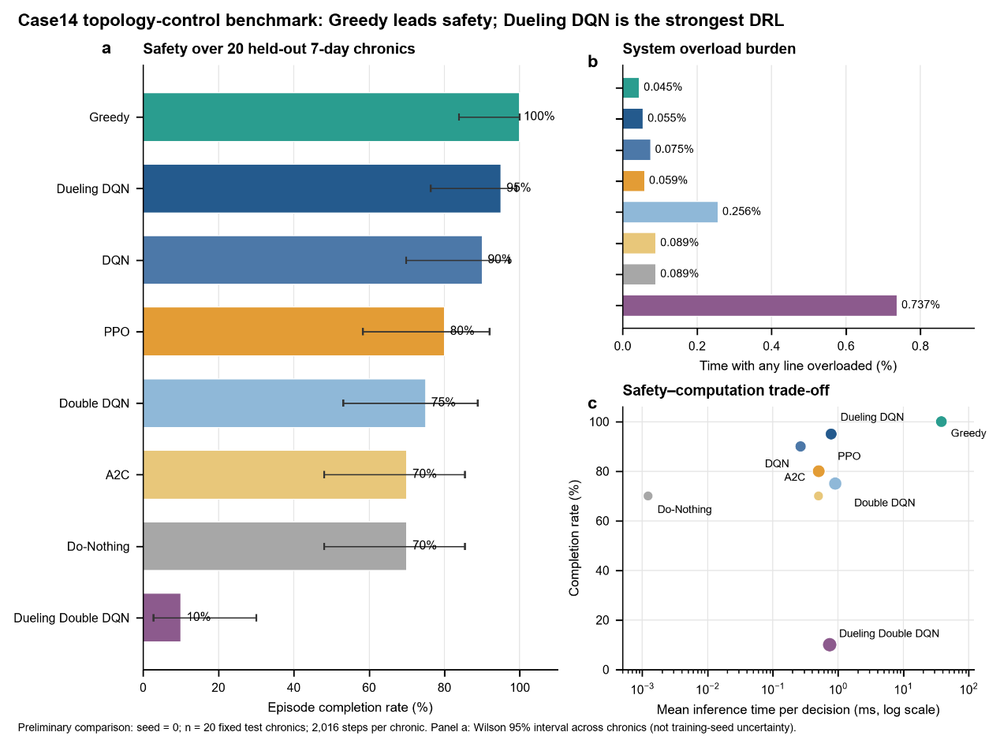

flowchart LR
A["Current grid state"] --> B["DRL agent"]
B --> C["Select one of 21 actions"]
C --> D["Change busbar connection<br/>or Do Nothing"]
D --> E["Power-flow redistribution"]
E --> F["Line loading / grid security"]
F --> A
Deep Reinforcement Learning for Power Grid Topology Control
Benchmarking topology reconfiguration for secure and efficient grid operation
POWER GRID · DEEP REINFORCEMENT LEARNING · TOPOLOGY CONTROL
Deep Reinforcement Learning for Power Grid Topology Control
This study evaluates whether deep reinforcement learning can improve power-grid security by changing substation busbar connections, redistributing power flows, and reducing transmission-line overloads.
IEEE 14-bus
Test system
5 min
Decision interval
21
Available actions
95%
Best DRL completion rate
Research question
Power generation and load demand vary over time, which can create highly loaded operating conditions. The central question in this work is:
Can a reinforcement-learning agent use topology reconfiguration to reduce line overloads and prevent blackouts while remaining fast enough for online decision making?
The control actions do not add transmission lines or reduce electricity demand. Instead, they change the busbar connections inside a substation so that power flows are redistributed through the existing network.
Test system
The study uses the IEEE 14-bus power grid implemented in Grid2Op. It contains 14 substations, 20 transmission lines, 6 generators, and 11 loads. Power generation and load demand change every five minutes.

Episode definition: each episode represents seven days, corresponding to 2,016 five-minute time steps.
DRL topology-control framework
At each time step, the agent observes the current grid state and selects one action. The resulting topology determines how power is redistributed before the next decision.
Action-space design
The action space is fixed before DRL training so that all learning algorithms and the Greedy controller are compared using exactly the same actions.
flowchart LR
A["178 candidate<br/>topology actions"] --> B["Test on 20 highly<br/>loaded grid states"]
B --> C["Rank by overload reduction<br/>and valid power flow"]
C --> D["Select best 20<br/>topology actions"]
D --> E["+ 1 Do-Nothing action"]
E --> F["21-action<br/>benchmark space"]
The 178 original actions change busbar connections within one substation. They are tested on 20 highly loaded states from the training data and ranked according to their ability to reduce line loading without producing an invalid power flow. The best 20 are retained, together with one Do-Nothing action.
Methods compared
DQNValue-based DRL baseline
Double DQNDouble-estimator DQN variant
Dueling DQNDueling value–advantage architecture
PPOPolicy-optimization method
A2CActor–critic method
Dueling Double DQNCombined DQN variant
GreedyNon-learning baseline
Do-NothingNo-control baseline
Evaluation metrics
The methods are evaluated using six complementary indicators:
| Metric | Interpretation | Desired direction |
|---|---|---|
| Completion Rate | Percentage of test episodes completing all 2,016 steps | Higher |
| Blackout Rate | Percentage of episodes ending early because the grid can no longer operate | Lower |
| Mean Episode Length | Average number of operating steps completed | Higher |
| Overload-Step Ratio | Percentage of operating steps with at least one overloaded line | Lower |
| Mean Actual Switching Steps | Average number of time steps in which topology is actually changed | Context dependent |
| Mean Inference Time | Average computation time required to select one action | Lower |
Key results
100%
Greedy completion rate
Highest security performance in the benchmark.
95%
Dueling DQN completion rate
Best-performing DRL method.
0.055%
Dueling DQN overload ratio
Second lowest overload burden after Greedy.
0.781 ms
Dueling DQN inference time
Sub-millisecond online action selection.

The figure summarizes three aspects of performance:
a. Episode completion rate. Higher is better. Greedy reaches 100%, while Dueling DQN is the strongest DRL method at 95%.
b. System overload burden. Lower is better. Greedy has the lowest overload-step ratio (0.0446%), followed by Dueling DQN (0.0550%).
c. Safety–computation trade-off. A favorable method combines high completion rate with low inference time. Dueling DQN provides the strongest safety–speed balance among the DRL methods, whereas Greedy is safer but substantially slower in this benchmark.
Benchmark note: the supplied comparison figure reports seed = 0, 20 fixed held-out seven-day chronics, and 2,016 steps per chronic. The error bars in panel (a) are Wilson 95% intervals across chronics and do not represent training-seed uncertainty.
Detailed performance
| Method | Completion Rate | Blackout Rate | Mean Episode Length | Overload-Step Ratio | Mean Actual Switching Steps | Mean Inference Time |
|---|---|---|---|---|---|---|
| Greedy | 100% | 0% | 2016.0 | 0.0446% | 13.15 | 38.195 ms |
| Dueling DQN | 95% | 5% | 1978.4 | 0.0550% | 15.55 | 0.781 ms |
| DQN | 90% | 10% | 1961.2 | 0.0750% | 8.60 | 0.266 ms |
| PPO | 80% | 20% | 1767.8 | 0.0591% | 30.00 | 0.505 ms |
| Double DQN | 75% | 25% | 1746.1 | 0.2560% | 40.75 | 0.905 ms |
| A2C | 70% | 30% | 1646.3 | 0.0889% | 0 | 0.500 ms |
| Do-Nothing | 70% | 30% | 1646.3 | 0.0889% | 0 | 0.001 ms |
| Dueling Double DQN | 10% | 90% | 1045.9 | 0.7371% | 73.25 | 0.743 ms |
Main findings
TipTakeaway 1 — Best overall security
Greedy achieves the highest episode completion rate and the lowest overload burden, making it the strongest security benchmark in the current comparison.
ImportantTakeaway 2 — Best DRL method
Dueling DQN is the strongest DRL method, reaching a 95% completion rate and a 0.0550% overload-step ratio while maintaining sub-millisecond inference time.
NoteTakeaway 3 — Fast DRL decision making
DQN has the lowest inference overhead among the tested DRL methods and requires fewer actual topology-switching steps than the other active DRL controllers in the supplied results.
WarningTakeaway 4 — Policy instability
Dueling Double DQN performs poorly in the supplied benchmark, with a 10% completion rate, 90% blackout rate, and the highest overload-step ratio, indicating significant policy instability in this experiment.
Research message
This benchmark demonstrates a clear distinction between maximum security performance and fast learned decision making. Greedy provides the strongest overall security, whereas Dueling DQN offers the most competitive DRL balance between episode survival, overload mitigation, and online inference speed.